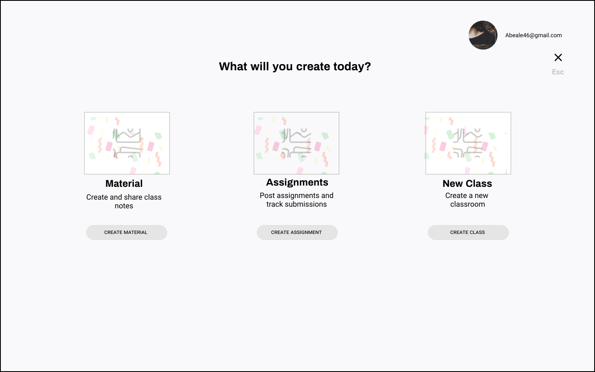
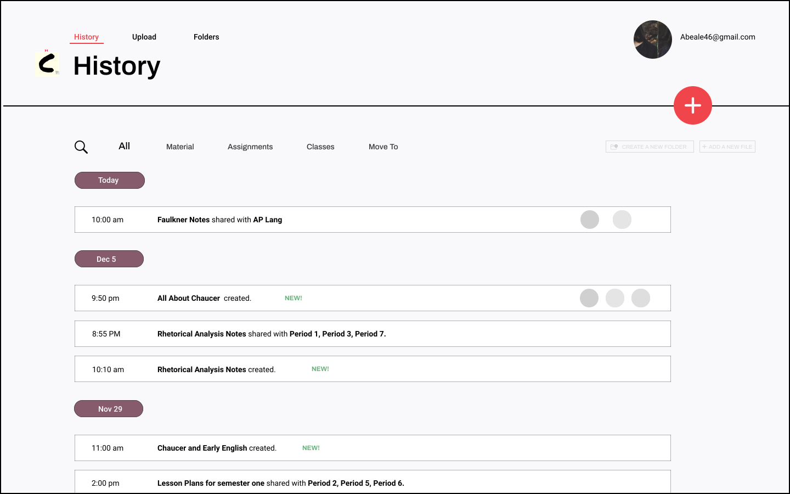

Cursive
A cloud-based organizational
tool for teachers

Overview
Problem
Upon learning that users in the education space were not happy with the integration of features for creating, sharing and receiving materials with their students, I sought to find the answer to the question, how can cloud storage platforms be improved such that these users will be more likely to efficiently streamline their workflow onto one single hub?
Solution
Enter Cursive, a multi-purpose cloud storage app with a focus on streamlining workflow for educators. An information card system allows users to visually categorize their materials and seamlessly share documents and assignments with a click. Due date reminders and visual cues of which classes have received which materials give users the ability to organize and navigate through files and folders associated with each classroom.

- Classroom Material at a Glance.
- Right here when you need it.
- Want a quick overview of what material you've shared with your various classes? Need to quickly grasp who you've shared material with? You'll find everything you need in Cursive at a glance.

- Seamlessly share with your classrooms.
- Never lose track of your classes.
- Cursive's unique card system allows you to know which classes you've shared work with.
- Team
- Solo Project
- Roles
UX Designer, UI Designer, Illustrator
- Tools
Paper & pen, Figma, Photoshop, Illustrator, Usability testing
- Deliverables
User Surveys, Personas, Competitive Analysis, Concepts Concepts & Identity, User Stories & Flows, Paper Prototype, Wire-Frames, User Testing, Visual Design
01 Research
User Survey
I created a survey to learn about organizational apps specifically designed for the educational space. I asked questions about which apps participants use and which features they found most useful and utilized most frequently.
Takeaways
85%
use Google Classroom whether or not with another app
44%
use Content Creation Frequently or Very Frequently, making it the most frequently used feature.
59%
see content organization as important, despite the fact that 82.5% are dissatisfied with their current tool.
87.5%
see Creation and Sharing being the two most important features they would like to have.
I found myself fixated on the last point. It seemed that although users frequently used organizational apps, they were often dissatisfied with their inability to create and share with their students all within one platform.
Competitive Analysis
To get a read on the competition I selected four cloud organizational platforms with which I had a familiarity: Google Classroom, Evernote, Dropbox and Blackboard.


Takeaways
The apps function similarly, with the main differentiating
factor being that Google Classroom and Blackboard sees themselves as a
classroom tools while Evernote and Dropbox position themselves themselves
as productivity tools.
Furthermore, for the two educational tools the only way to organize files is by moving
between various platforms (and in the case of Blackboard,
uploading from an entirely separate ecosystem).
Could I improve the educational platforms to provide greater seamless productivity? This discovery was pertinent to my interest in finding a viable alternative to aid teachers streamline their processes.
Personas
To better guide my design and understand on an empathetic level the users' needs, I further synthesized the interview results and arrived at the following personas:


User Stories
The most impactful user stories I came up with, in order of priority (based on what people used frequently and rated highly) and relevance, would make up the MVP of my product:
Minimum Viable Product
Upload individual files
Upload a group of files from my computer and mobile device
Share files with various classrooms
Create a document from scratch
Organize my files in folders
View which material has been shared with each classroom
View how much time remains before assignments are due
User Flows
It was at this stage that I played around more with the idea of cards. I constructed my flows under the assumption that folders might be limiting way of navigation and that some sort of card system could help solve two problems that I had with folders:

Problems with folders
Limits your ability to immediately engage with your files.
Reduces the amount of useful information the user has at first glance.
I also thought about the benefits of using a card system with expanding capabilities:
Provides important information accessible right from the dashboard.
Allows the capability to immediately share information between the teacher and entire classrooms.
View how much time remains before assignments are due
I drafted the following user flows based on the card system functioning as the nexus point of control. The idea was to provide a card per classroom material the user creates. This would provide the user with visual and informational cues with which to identify the files and folders on their app and which classrooms had what information.
Sitemap
I based the sitemap on my user flows, making sure each action was accessible from the dashboard.
02 Low-Fidelity
Sketches
Once I had prioritized my user stories and flows, creating a dashboard that adhered to the principles of user ease was of the utmost importance. The dashboard functions as the user’s mission control center. This is where all the action happens.

After creating a series of quick sketches, I put together a more “refined” sketch based on which elements and layouts I liked best and which would emphasize the main features.
A top navigation which controls access of specific elements within whatever page you are on.
Menu cards that provide relevant information about each file
A Large Create button that would serve as the primary feature
TESTING MY SKETCHES
I interviewed some teachers for feedback on my proposed dashboard and to gauge interest in a card system.
Takeaways
CREATE button could be more accessible on the top right corner.
The competitors concentrate functionality on one side, which could make
navigation difficult.
A card system could be used to categorize information
Conversely a card system might compromise information hierarchy
- "
- After 3 years of teaching, I still have a tough time keeping organized.
- "
- Tester on how he feels about organization
The quote above confirmed that I was on the right track. Educators might be able to have an easier time organizing if they could see relevant information instanteously. Google Classroom requires a multiple-step process into getting the relevant information they needed.
Wireframes
I started constructing my digital wireframes based on the input I received.
Main Changes
CREATE button placed to the far right corner, underneath the avatar for easy view
A side navigation which controlled access within the platform, and clearly differentiated from the top navigation whcih controls access to elements within a specific page.
A card system could be used to categorize information
Conversely a card system might compromise information hierarchy


I tested my wireframes with four participants, which made clear one important commonality - that the card system needed refinement.

Scalability: Including so much information on the cards might not be scalable as it expands.
Law of proximity: Editing the labels on a file takes the user to the other side of the screen, which is too far from the selected file, associated items and actions
High-Fidelity
Branding
I worked on the branding concurrently with the wireframes. I developed the brand around the word Cursive, a term recognizable to us all from primary school, and which makes a nice juxtaposition between an old writing system and software in the modern age. The phrase “Get it done with Cursive” references the directness of the app and how easily accessible.
The logo
I drew inspiration from the idea of a Post-It that you can scribble little notes on. I wanted a sense of the platform as a place for the user to go to.
Mood Board & Typography

Color Palette

The associations I drew from the Post-It mark were those of an approachability coupled with a meticulousness and clarity, allow of which are attributes all great teachers possess. The product should feel warm and therefore familiar, although it is providing efficiency and organizational transparency, it doesn't have to be void of personality.
Mockups
With the branding guide in place, I could now confidently begin on my mockups. The first thing I focused on was applying the various changes I needed to make from testing the wireframes, specifically a rearrangement and refinement of several features.
Dashboard Mockup
Main Changes
New cards contain less information in order to declutter.
Menu cards are lined for a horizontal scroll across the screen.
The Cursive logo is featured promptly next to the page title
ONBOARDING


Main Flow
- 

Folders
- 
Mobile
I applied Material Design principles for Cursive's mobile app, using a floating action button for the Create functions and a navigation bar for access to different parts of the screen.
In terms of interaction, I added a down arrow to the expandable card as a subtle way to encourage users to view additional information on each card as a trade-off on limiting the amount of information on the cards.
Preference Testing
I took to preference testing for various visual aspects of the app which I felt could use some improvement. Specifically I need help with my cards.


After reading the testers’ comments, I realized that although most people preferred the reordered nature of the cards, it created issues with the layout when the card was expanded. Perhaps the benefits of the downward expansion were being outweighted. The conclusion I came to was that I needed to fix the visiblility of the select state.
Testing My Mockups
I tested three individuals with my new prototypes, two remotely and one in-person. I asked them to complete several tasks:
User Testing Script
Create an account and go through the onboarding tour.
Create and save a new document
Share Notes to White Teeth with your classroom.
Edit the Rhetorical Analysis Notes material
Organize the Rhetorical Analysis Notes into a folder and see which classes you’ve shared it with
Filter your view to show me only Assignments due
Find out the due dates for students’ Rhetorical Analysis essay
- Law of Proximity
One test participant felt having the Cursive logo so close created "confusion" as to its function. This was consistent with earlier wireframe issues regarding it's functionality.

Despite these issues, the users overall had a positive attitude towards the organizational features of Cursive.
Final
In prior iterations, I failed to utilize proximity to allow users to form an association between the menu card and how best to utilize it. This was an issue that had recurred time and again, whether it was with an expandable menu card or where the Create button should be placed.
Main Changes
Select state - Changed the visual and informational hierarchy on the menu cards by adding colors to notify the user of approaching due dates and safe dates.
Adjusted information on the Version History views to provide information about what new material was created and the status of new material.
Adjusted Upload views to solve issues of moving items more easily into folders and viewing items outside of the main card display.
Add color and hierarchy to the flipped card view to indicate range of actions the user can take within that view.
Conclusion
There is room for improvement in cloud-based organizational tools. There is potential for a card system to become a useful tool in terms of helping educators address issues of creation and organizing material for their classrooms.
Reflections on My Process
I reflected on what I coud have done to improe my overall process.
Things I would have done differently
Conduct more follow-up research about cloud storage app users with more focus on educators. I feel that my survey data wasn’t as targetted as it needed to be due to including professionals from other walks of life beyond educators and a lack of foresight regarding the direction the product ultimately took.
Created further iterations of my card. At the moment, although the cards themselves are quite functional, I still think they could generally bear with some improving upon.
Greater emphasis on the organizational aspect of the app. I neglected prioritizing a filing system since I was caught up with my card view.
Building the Cursive app was a learning process for me in many ways, both with the tools I learned to use and very much with the design process.
What I Learned
Establishing explicit goals and audiences for survey writing is important. The general nature of my survey reflected my initial uncertainty with my project’s direction. As a result, my survey results reflect an imprecision that might otherwise not have been there if I had sought follow-up feedback when my project direct became clearer to me.
The law of proximity holds true. Users form associations when objects and items are in close proximity to one another. This was an issue I encountered time and again because I wasn’t adhering to a basic principle of design.
Journal everything! I regret not doing as good a job as possible with keeping notes about my process. The practice of daily reflections on my projects is something I’ve gotten a lot better at. But it would definitely have made my life a lot easier if I had followed this discipline starting on Day One.